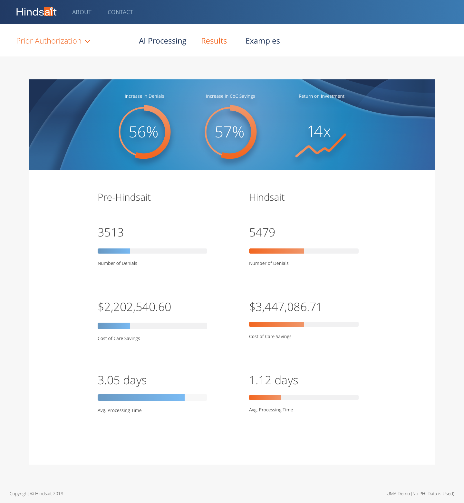
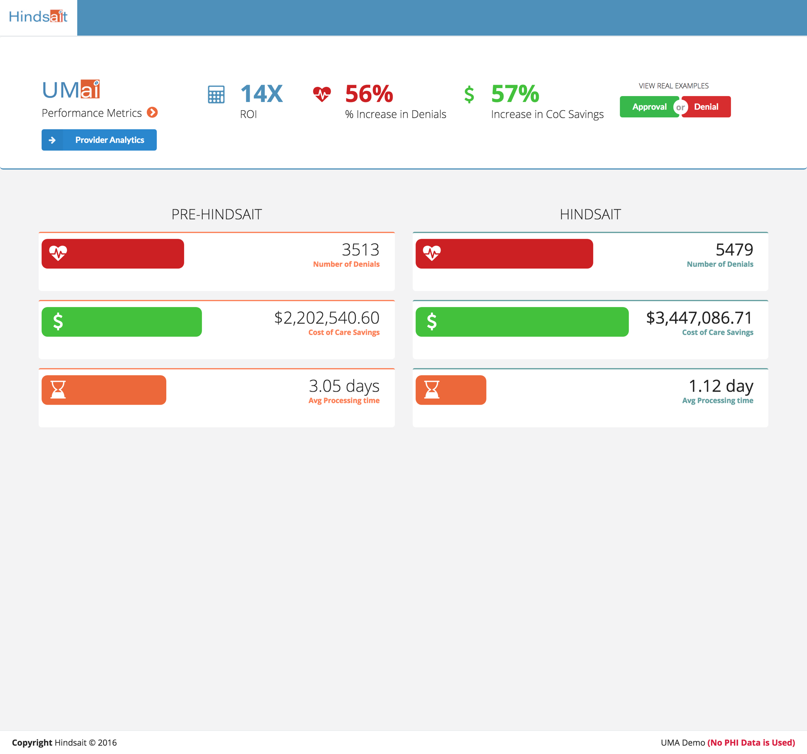

Our public-facing demo experience was in need of a redesign to match the style of our new product. I had already rebuilt the symbol/module during the product refresh, so we were able to focus our time on new iterations and tools.
All names and data are fictional.
I built this prototype to illustrate the functionality of fax highlighting tools built into the demo. Users can browse fax records and toggle the controls to highlight specific metrics.

This page showcases the key features built into Hindsait's algorithms. As the user selects a feature, the AI scans the fax preview and loads the results in the feature block.
My redesign of Hindsait comparison results page.
Previous version.
My goal for this task was to introduce as much brand consitency as possible, while highlighting the key stats. The analysis needed to be scannable and hit home for prospective clients. Orange is defined as our primary color across buttons, modules, and stats so I chose our key takeaways to be styled in the color.